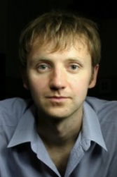

UCL VECG Team
Academy Staff
- 
-
Simon Julier
Reader in Situation Awareness Systems
Research:
Mixed and Augmented Reality, User Interfaces, Distributed and Multi-Target Tracking, SLAM, Object Detection and Recognition, Scene Understanding.
Office:
GS 5.04
-

-
Tim A. Weyrich
Professor of Visual Computing
Research:
Appearance Modelling and Fabrication, Point-based graphics, 3D Reconstruction, Cultural Heritage Analysis and Digital Humanities
Office:
GS 5.09
-

Research Staff
-
-
Nicolas Mellado
Research Associate
Research:
Shape analysis, Implicit Representations, Multi-Scale formalisms, Shape matching, Cultural Heritage applications
Office:
MPEB 7.08
-
-
David Swapp
Research Fellow and Immersive VR Lab Manager
Research:
Complete VR Systems (Displays, Tracking, Interaction, Navigation), Psychophysics (Visual, Haptic & Acoustic), Virtual Characters, Performance in VR, Capture
Office:
MPEB G.01d